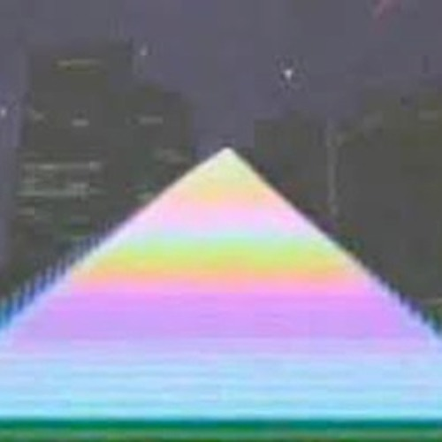

"Vaporwave is a microgenre of electronic and a subgenre of hauntology, a visual art genre, and an internet meme that emerged in the early 2010s, and became well known in 2015." - Wikipedia
Vaporwave originally started on the internet in the early 2010s as an ironic variant of the popular genre Chillwave and as a deriviation of hypnagogic pop artists such as Ariel Pink and James Ferraro, who were also characterized by the invocation of retro pop culture. Being one of the many internet microgenres to emerge in this era, alongside witch house, seapunk, shitgaze, cloud rap, and others.
"Chillwave" and "hypnagogic pop" were coined virtually at the same time, of which being mid-2009, and were considered interchangable terms. Like vaporwave, they engaged with notions of nostalgia and cultural memory. Among the earliest hypnagogic acts to anticipate vaporwave was Matrix Metals and his album Flamingo Breeze (2009), which was built on synthsizer loops. Around the same time, Daniel Lopatin (Oneohtrix Point Never) uploaded a collection of plunderphonics loops to Youtube under the alias 'sunsetcorp' these clips were taken from his audio-visual album 'Memory Vague' (June 2009). Washed Out's "Feel It All Around" (June 2009), which slowed down the 1983 italian dance song 'I Want You' by Gary Low, exemplified the "analog nostalgia" of chiillwave that vaporwave artists sought to reconfigure.
A screencap from one of sunsetcorp's most popular videos, 'nobody here'
Back to homepageAll images are public domain